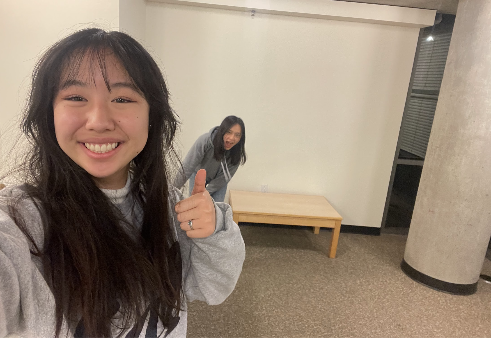

Wendy Liu
Cognitive Science, Data Science Major | 2nd Year
Hi! My name is Wendy Liu, and I am originally from San Diego. In my free time, I enjoy cooking new yummy foods, playing volleyball, and rotting in bed!
Top 3 Berkeley Food Places:
- Little Plearn
- Kuboba
- Noodle Dynasty
Me!

You should check this out:)
Cool Website
- I learned that many websites/apps use a lot of different design ways to catch our eyes or make us feel a certain way when experiencing their website. It's pretty cool that small details like wording or what things are put in view can affect so much!
- My favorite was the part that talks about things to keep in mind when scrolling through websites or apps. It'll definitely give me a new perspective on things that are highlighted or spacing or intention of a website
- " By routinely analyzing other apps, you’ll develop your product thinking and get better at designing apps yourself."
- 10 it was cool